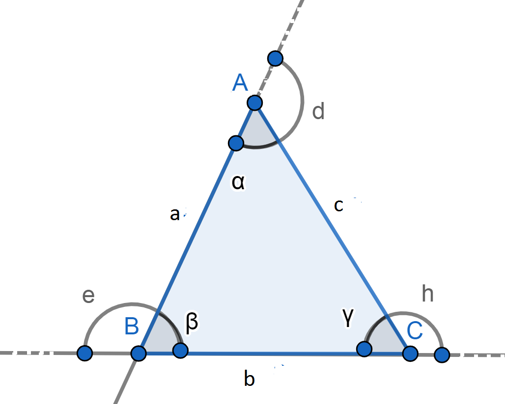
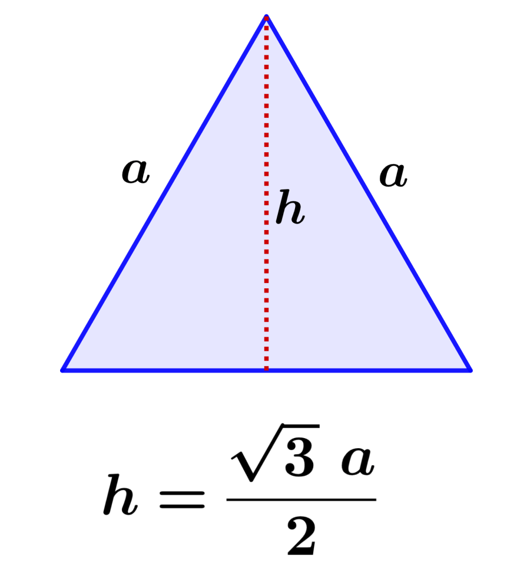
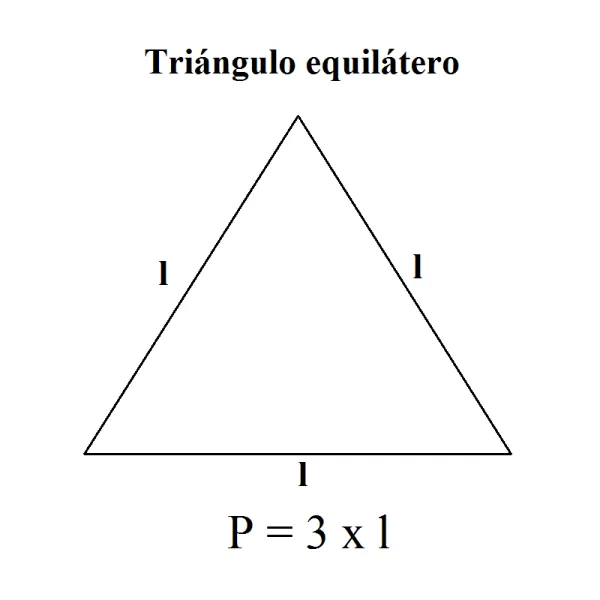

Triangulo Equilátero
¿Qué es?
El triángulo equilátero es un triángulo que todos sus lados tienen la misma longitud.
Esto implica también que todos sus ángulos sean iguales, es decir, cada ángulo mide 60 grados (recordemos que la suma de los ángulos de un triángulo es 180 grados y, por lo tanto, estos 180 grados se dividen en partes iguales por los tres ángulos).

Formula para calcular el area
El área de un triángulo equil/aacutetero se obtiene al multiplicar la base (a) por la altura (h) y dividir entre 2.

Calcular el perímetro
Una de las características del triángulo equilátero es que sus tres lados son iguales, por lo tanto, para calcular el perímetro corresponde a tres veces la longitud de uno de sus lados (a).
Perímetro= 3a

Caracteristicas
- Los ángulos externos son suplementarios al ángulo interno del mismo lado, por lo que cada ángulo externo mide 120 grados. Se cumple que el ángulo en C + φ = 180 grados, por lo que 60 + 120 = 180.
- Un triángulo equilátero puede ser a su vez acutángulo, por tener todos sus ángulos internos agudos (< 90).
- Las líneas fundamentales, altura, mediatriz, bisectriz y mediana, coinciden sobre una misma recta trazada, dado que sus tres lados son iguales
- Los puntos fundamentales como ortocentro, baricentro, circuncentro e incentro, coinciden en un mismo punto.
- Cualquier línea notable que se trace divide el triángulo equilátero en dos triángulos rectángulos congruentes. Pudiéndose aplicar el teorema de Pitágoras.